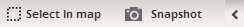
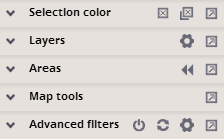
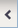
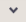
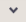
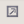
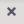
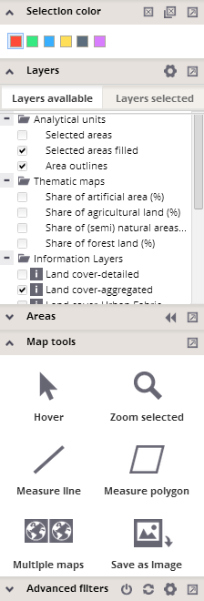
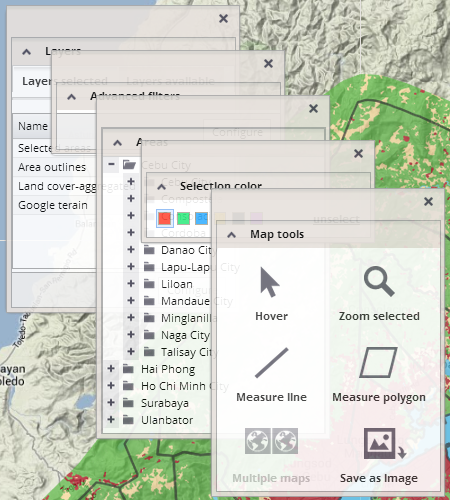

Setting the visualization properties
This section provides various tools for the selection of units, and the modification of map layout, as well as standard map tools.
The following panels are incorporated in this section:
By default, this section is arranged as follows:


This section can be completely hidden/expanded by clicking on the arrow in the upper corner:  . Each panel from the section can be expanded/collapsed by clicking on  icons.
. Each panel from the section can be expanded/collapsed by clicking on  icons.
Each panel can be detached using the  icon. Detached panels can moved by dragging them anywhere over the application or brought back into the section using the  icon in the top right corner of each detached panel.
Multiple panels can be expanded or detached at the same time.
 